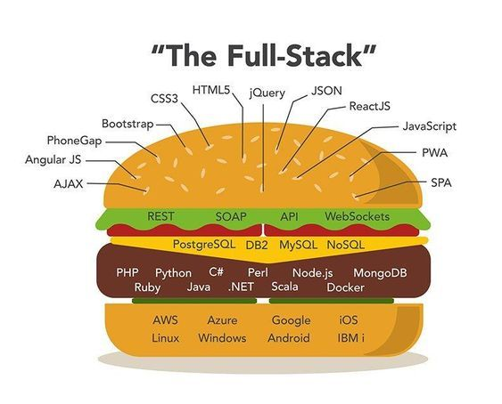

Welcome to our e-learning platform, where we offer a comprehensive range of courses to support developers of all levels, including back-end developers, front-end developers, and full stack developers. Our courses cover a wide range of technologies and programming languages, from server-side languages such as Java and Python to front-end frameworks such as React and Angular. We provide a flexible and accessible learning experience that caters to different learning styles and schedules, with interactive tutorials, hands-on coding exercises, and personalized feedback from experienced instructors. For back-end developers, our courses cover server-side programming languages such as Java and Python, as well as database technologies such as SQL and NoSQL. We also offer courses on cloud computing and DevOps, helping you to develop skills in deploying and managing web applications at scale. For front-end developers, we offer courses on HTML, CSS, and JavaScript, as well as popular front-end frameworks such as React, Angular, and Vue.js. You'll learn how to build responsive and interactive user interfaces that are optimized for different devices and browsers. For full stack developers, we offer courses that cover both back-end and front-end technologies, providing a comprehensive understanding of how web applications are built and deployed end-to-end. You'll learn how to develop and integrate different components of web applications, from the front-end user interface to the back-end server logic and database management. No matter your level of experience or background, our e-learning platform provides the resources you need to grow your skills as a developer and advance your career in web development. Start your learning journey today and unlock your potential as a developer!
